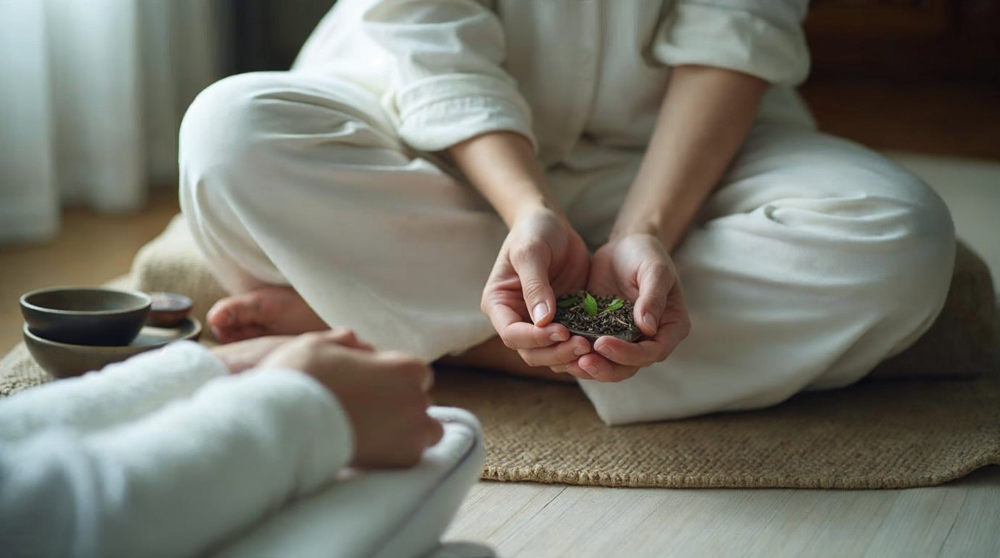

이종호 한의사 감수좋은꿈참사랑한의원 대표원장 (한의사 면허번호 19769)발행 2026-11-26 · 수정 2026-11-26
이 글의 차례
건강검진 결과지를 받아 든 저녁, 혈압 칸에 낯선 표시가 붙어 있습니다. '고혈압 의심' 혹은 '주의'. 몸은 멀쩡한 것 같은데, 숫자 하나 때문에 갑자기 아픈 사람이 된 기분이 듭니다. 내과에서는 약 이야기를 꺼내고, 가족은 짜게 먹지 말라고 한마디씩 거듭니다.
고혈압 진단을 받았거나 경계라는 말을 들었다면, 저는 먼저 집에서 혈압을 바르게 재는 일부터 권합니다. 그다음 짠맛과 잠, 스트레스, 걷기를 차례로 살핍니다. 혈압약을 처방받으셨다면 생활을 바꾸더라도 약은 처방한 의사와 상의 없이 끊지 않습니다.
그리고 가슴이 조이듯 아프거나, 머리가 터질 듯 아프거나, 말이 어눌해지고 한쪽 팔다리에 힘이 빠진다면 이 글보다 가까운 응급실이 먼저입니다. 혈압 숫자를 다시 재 보며 기다리실 일이 아닙니다.
진료실에서 혈압 이야기를 꺼내면 많은 분이 조금 억울한 얼굴을 하십니다. 아픈 데도 없는데 평생 약을 먹어야 하느냐고, 병원에서만 높게 나오는 것 같다고요. 그 마음을 압니다. 숫자는 덜컥 겁을 주는데, 정작 무엇을 해야 하는지는 잘 알려 주지 않으니까요.
그래서 이 글은 겁을 드리려는 글이 아닙니다. 오늘 저녁부터 할 수 있는 일, 그리고 꼭 병원부터 가셔야 하는 때를 나누어 차근차근 적어 보려 합니다.
왜 아픈 데도 없는데 혈압이 문제가 될까요
고혈압은 대개 아무 느낌이 없습니다. 그래서 '조용한 병'이라고들 부릅니다. 뒷목이 뻣뻣하면 혈압이 오른 것 같다고 하시는데, 실제로는 혈압이 꽤 높아도 아무렇지 않은 분이 많고, 뒷목이 당겨도 혈압은 괜찮은 분도 많습니다.
문제는 높은 압력이 오랜 시간 혈관 벽을 누른다는 데 있습니다. 수도관에 늘 센 물살이 지나가면 관 안쪽이 조금씩 상하듯, 혈관도 해를 두고 단단해지고 좁아질 수 있습니다. 그 영향은 뇌, 심장, 콩팥, 눈처럼 가는 혈관이 많은 곳에서 먼저 드러나곤 합니다.
그러니 혈압 관리는 오늘 아픈 곳을 달래는 일이라기보다, 십 년 뒤의 나를 위해 지금 물살을 조금 누그러뜨리는 일에 가깝습니다. 저는 이 이야기를 할 때 늘 조금 조심스럽습니다. 멀리 있는 일이라 와닿지 않는 것이 당연하니까요.
한의학에서는 혈압이라는 말을 쓰지 않았지만, 머리로 기운이 치솟는 듯한 상태, 잠이 얕고 쉽게 화가 나는 상태, 몸이 무겁고 잘 붓는 상태를 나누어 보았습니다. 저는 이 구분을 진단명 대신, 생활의 어느 곳부터 손볼지 정하는 지도로 씁니다.
경계 혈압과 고혈압, 숫자는 이렇게 읽습니다
진료실에서 잰 혈압이 140/90mmHg 이상이 여러 번 나오면 고혈압으로 보는 것이 일반적입니다. 대한고혈압학회 기준으로 120~129/80 미만은 주의 혈압, 130~139/80~89는 고혈압 전 단계라고 부릅니다. 경계라는 말은 아직 약이 필요하지 않을 수 있지만, 생활을 돌아볼 때가 되었다는 신호로 받아들이시면 됩니다.
집에서 잰 혈압은 기준이 조금 낮습니다. 국내 진료지침에서는 가정혈압 평균이 135/85mmHg 이상이면 고혈압으로 봅니다. 진료실보다 집이 마음이 편하니 숫자도 조금 낮게 나오는 것이 보통이기 때문입니다.
병원에서만 높게 나오고 집에서는 정상인 경우를 흰 가운 고혈압이라고 부릅니다. 반대로 병원에서는 괜찮은데 집이나 직장에서 높은 경우도 있습니다. 어느 쪽인지 가리려면 결국 집에서 잰 기록이 필요합니다. 그래서 저는 가정혈압 기록을 가장 먼저 부탁드립니다.
먼저 이렇게 여쭙니다
처음부터 숫자를 정확히 기억하지 못하셔도 괜찮습니다. 아래 질문을 한 번 떠올려 보고 오시면 이야기가 한결 쉽게 풀립니다.
- 처음 혈압이 높다는 말을 들은 것은 언제, 어디서였나요? 그때 숫자는 얼마였나요?
- 집에서 재 본 적이 있나요? 아침과 저녁 중 언제 더 높게 나오나요?
- 혈압약을 처방받으셨다면 약 이름과 드시는 시각, 빠뜨리는 날이 있는지요?
- 요즘 몇 시에 잠들고, 코를 골거나 자다가 숨이 멎는다는 말을 들은 적이 있나요?
- 하루 국물과 김치, 젓갈, 라면, 배달 음식은 어느 정도 드시나요?
- 가족 가운데 고혈압, 뇌졸중, 심장병, 콩팥병을 앓은 분이 있나요?
집에서 혈압을 바르게 재는 법
가정혈압은 재는 방법에 따라 숫자가 꽤 달라집니다. 같은 사람이 같은 날 재도 앉은 자세, 팔 높이, 말을 했는지에 따라 10mmHg 넘게 차이가 나기도 합니다. 그래서 숫자보다 먼저 재는 습관을 맞추는 것이 중요합니다.
혈압계는 손목형보다 위팔에 감는 형태가 대체로 정확합니다. 커프가 팔 굵기에 맞는지도 확인해 주세요. 너무 작은 커프는 숫자를 높게, 너무 큰 커프는 낮게 보이게 할 수 있습니다.
- 아침: 일어나 한 시간 안에, 소변을 본 뒤, 혈압약과 아침 식사 전에 잽니다.
- 저녁: 잠들기 전에 잽니다. 목욕이나 식사, 술 마신 직후는 피합니다.
- 자세: 등을 기대고 앉아 다리를 꼬지 않고, 5분쯤 조용히 쉰 뒤 잽니다.
- 팔: 커프를 맨살 위팔에 감고, 팔을 책상에 올려 심장 높이에 맞춥니다.
- 횟수: 한 번에 1~2분 간격으로 두 번 재서 둘 다 적습니다.
- 기간: 적어도 일주일, 진료 전이라면 그 직전 일주일을 이어서 잽니다.
잴 때는 말을 하지 않고 휴대폰도 내려놓습니다. 커피와 담배는 재기 30분 전부터 피합니다. 숫자가 높게 나왔다고 바로 다시, 또다시 재는 분이 많은데, 마음이 급해지면 숫자도 따라 오르기 쉽습니다. 정해진 두 번만 재고 적으면 충분합니다.
추운 아침에 유독 높게 나와 걱정되신다면 추운 아침마다 혈압이 높게 나올 때 집에서는 어떻게 재고 기록하나요?에 계절에 따른 차이를 따로 적어 두었습니다.
짠맛, 잠, 스트레스를 함께 봅니다
혈압을 올리는 생활 요인은 여러 가지지만, 진료실에서 가장 자주 이야기하게 되는 것은 세 가지입니다. 짠맛과 잠, 그리고 마음의 긴장입니다. 셋은 서로 꼬리를 물기도 합니다.
짠맛: 국물 한 그릇이 하루치가 되기도 합니다
소금은 하루 5g 아래로 먹기를 권하는 것이 세계보건기구의 기준입니다. 그런데 찌개나 라면 국물 한 그릇, 김치 몇 조각만으로도 그 양에 금세 닿습니다. 우리 밥상은 반찬마다 간이 되어 있어서, 짜게 먹는다는 느낌 없이도 많이 먹게 됩니다.
저는 갑자기 싱겁게 먹으라고 하기보다 국물부터 남겨 보시라고 말씀드립니다. 건더기는 드시고 국물은 반만, 라면 스프는 반만, 젓갈과 장아찌는 하루 한 번만. 혀가 싱거운 맛에 익숙해지는 데는 몇 주가 걸리니 처음 며칠 맛이 없는 것은 당연합니다.
채소와 과일에 많은 칼륨은 나트륨 배출을 돕는다고 알려져 있습니다. 다만 콩팥 기능이 떨어져 있거나 칼륨에 영향을 주는 약을 드신다면 먼저 처방한 의사와 상의해 주세요.
짠맛에 대한 이야기는 짠 음식과 국물을 좋아하는 습관은 혈압과 어떤 관련이 있나요?에 더 자세히 적었습니다.
잠: 밤새 쉬지 못한 몸은 아침 혈압으로 드러납니다
잠이 짧거나 자주 깨면 다음 날 아침 혈압이 높게 나오는 분이 많습니다. 특히 코를 심하게 골고 자다가 숨이 멎는다는 말을 들으셨다면 수면무호흡을 의심해 볼 수 있습니다. 수면무호흡은 혈압과 깊이 이어져 있다고 알려져 있어 수면 검사가 가능한 의료기관에서 확인해 보시길 권합니다.
몇 시간 주무셨는지보다 몇 시에 잠들고 몇 번 깨셨는지를 저는 더 궁금해합니다. 밤 열두 시를 넘겨 잠드는 날이 이어지는지, 새벽에 화장실 때문에 깨는지, 깬 뒤 다시 잠들기 어려운지에 따라 살필 곳이 달라집니다.
스트레스: 마음이 조이면 혈관도 조입니다
마감이 몰린 주, 가족 일로 마음을 졸인 날에는 혈압도 따라 오르곤 합니다. 긴장하면 몸은 싸울 준비를 하느라 심장을 빨리 뛰게 하고 혈관을 좁힙니다. 짧게 지나가면 괜찮지만, 그 상태로 몇 주를 지내면 혈압이 좀처럼 내려오지 않습니다.
맥을 짚다 보면 손끝에 팽팽한 줄처럼 닿는 날이 있습니다. 그런 날 여쭈어 보면 요즘 잠을 못 잤다거나, 신경 쓸 일이 많았다는 말씀이 자주 나옵니다. 저는 그 말씀을 혈압 숫자만큼이나 중요하게 받아 적습니다.
일상에서 먼저 해 볼 수 있는 것
한꺼번에 다 바꾸려 하면 오래가기 어렵습니다. 하나를 몸에 붙이고 나서 다음 것을 더하는 편이 결국 멀리 갑니다.
- 아침·저녁 가정혈압을 일주일 동안 같은 방법으로 재서 적기
- 국물은 반만, 라면 스프는 반만, 젓갈·장아찌는 하루 한 번으로 줄이기
- 하루 30분쯤 숨이 조금 찰 정도로 걷기, 주 5일을 목표로 천천히 늘리기
- 잠드는 시각을 일정하게 맞추고, 잠들기 한 시간 전에는 화면 끄기
- 술은 횟수와 양을 함께 줄이고, 담배는 끊을 방법을 의료진과 상의하기
- 하루 한 번, 숨을 넷까지 들이쉬고 여섯까지 내쉬기를 다섯 번 되풀이하기
걷기는 세게 짧게보다 약하게 오래가 몸에 맞는 경우가 많습니다. 일주일에 한 번 몰아서 빨리 걷는 것보다, 일주일에 여러 번 천천히 오래 걷는 쪽을 권합니다.
언덕길이 많은 동네라면 혈압이 높다는 말을 듣고 동네 언덕길 걷기를 시작하려 할 때는 무엇을 먼저 확인하나요?도 함께 보세요.
허리둘레가 늘었다면 체중을 조금만 줄여도 혈압이 함께 내려가는 경우가 많습니다. 큰 목표보다 지금보다 몇 킬로그램만 가볍게 하는 데서 시작하셔도 됩니다.
혈압약, 혼자 끊지 않습니다
진료실에서 가장 조심스럽게 말씀드리는 부분입니다. 생활을 바꾸고 나서 혈압이 잘 나오면 약을 그만 먹어도 되겠다고 생각하시는 분이 많습니다. 그 마음은 충분히 이해합니다. 하지만 숫자가 좋아진 것은 약이 제 몫을 하고 있어서일 수도 있습니다.
혈압약을 갑자기 끊으면 혈압이 다시 오르거나, 약에 따라서는 심장이 빨리 뛰는 등 몸이 불편해질 수 있습니다. 약을 줄이거나 바꾸는 것은 가정혈압 기록을 들고 처방한 의사와 상의해서 정합니다. 저 역시 약을 끊으라고 말씀드리지 않습니다.
한약이나 건강기능식품을 함께 드시고 싶다면 먼저 지금 드시는 약 이름을 알려 주세요. 어떻게 확인하는지는 혈압약이나 당뇨약을 먹고 있는데 한약을 함께 먹어도 되는지 어떻게 확인하나요?에 정리해 두었습니다.
예를 들면 이런 경우입니다
실제 어느 분의 사연이 아니라, 진료실에서 자주 보는 모습을 바탕으로 그려 본 장면입니다.
예를 들어 회사 검진에서 처음 경계 혈압이라는 말을 들었는데, 평소 점심은 국밥이나 찌개, 저녁은 늦은 배달 음식인 경우가 있습니다. 이럴 때는 일주일 가정혈압과 함께 하루 국물을 몇 그릇 드시는지 적어 보시라고 말씀드립니다.
혈압약을 먹은 지 몇 년이 되었는데, 아침에만 유독 높게 나오고 잠은 늘 얕은 경우도 있습니다. 코골이와 잠드는 시각을 여쭙고, 필요하면 수면 검사를 권하며, 아침 기록을 들고 처방한 의사와 상의하시도록 돕습니다.
병원에서는 늘 150 가까이 나오는데 집에서는 120대인 경우도 있습니다. 혈압계를 들고 오셔서 진료실 혈압계와 나란히 재 보면 집 기계가 맞는지, 재는 방법이 맞는지 함께 확인할 수 있습니다.

한의원에서 함께 살필 수 있는 경우
- 경계 혈압이라는 말을 듣고 생활을 어디서부터 바꿀지 막막한 경우
- 혈압과 함께 잠이 얕고, 뒷목이 당기고, 쉽게 피곤한 경우
- 체중과 허리둘레가 늘고 식후 졸음이 심한 경우
- 혈압약을 드시면서 한약을 함께 상의하고 싶은 경우(처방한 의사와의 상의와 함께)
좋은꿈참사랑한의원에 처음 오시면 혈압을 언제부터 어떻게 들으셨는지, 드시는 약과 받으신 검사 결과부터 여쭙니다. 아래 위험 신호에 해당하는 것은 없는지도 먼저 확인합니다. 결과지와 가정혈압 기록, 약 봉투를 가져와 주시면 도움이 됩니다.
그다음 양손을 올려 달라고 말씀드립니다. 저는 처음 오신 분이든 다시 오신 분이든 모든 분께 맥을 짚습니다. 맥을 짚는 동안 잠과 소화, 대변, 몸이 찬지 더운지, 요즘 마음 쓰이는 일을 여쭙고 혀도 봅니다.
필요하면 진료실에서 혈압을 다시 재고, 인바디로 체성분을, 원내 검사기로 당화혈색소나 혈액 수치를 확인하기도 합니다. 혈압이 많이 높거나 다른 수치가 걱정스러우면 내과 진료가 먼저라고 말씀드리고 그 이유를 설명합니다.
이렇게 살핀 내용을 바탕으로 생활에서 먼저 바꿀 것 하나와, 침이나 한약 상담처럼 함께 할 수 있는 것을 정합니다. 다시 오시면 지난번 이후 가정혈압 기록과 잠, 국물 이야기부터 이어서 여쭙습니다.
이렇게 기록해 오시면 상담이 쉬워집니다
혈압은 하루에도 여러 번 오르내립니다. 진료실에서 한 번 잰 숫자보다 일주일 동안 쌓인 기록이 훨씬 많은 것을 알려 줍니다.
- 날짜와 시각, 아침·저녁 각각 두 번 잰 숫자와 맥박
- 전날 잠든 시각, 밤에 깬 횟수
- 그날 국물·라면·배달 음식을 먹었는지, 술을 마셨는지
- 그날 마음의 긴장(낮음·보통·높음 가운데 하나)
- 혈압약 이름과 먹은 시각, 빠뜨린 날
- 두통, 어지럼, 가슴 두근거림처럼 평소와 다른 느낌이 있었는지
빠진 날이 있어도 괜찮습니다. 기억나는 만큼만 적어 오시면 나머지는 제가 여쭙겠습니다.
이런 증상은 먼저 확인이 필요합니다
- 가슴이 조이거나 짓누르듯 아프고, 식은땀이 나거나 숨이 찬 경우
- 갑자기 시작된 극심한 두통, 지금까지 겪어 보지 못한 두통
이런 신호가 있으면 한의원보다 가까운 병원이나 응급실을 먼저 찾으세요.
혈압이라는 숫자는 하루아침에 생기지 않았고, 하루아침에 바뀌지도 않습니다. 그만큼 오늘 국물 반 그릇, 오늘 저녁 30분 걷기가 쌓여 가는 일이기도 합니다. 다음에 오시면 일주일 동안 적어 오신 아침 혈압부터 함께 펼쳐 보겠습니다.

여쭙는 것
- 처음 혈압이 높다는 말을 들은 것은 언제, 어디서였나요? 그때 숫자는 얼마였나요?
- 집에서 재 본 적이 있나요? 아침과 저녁 중 언제 더 높게 나오나요?
- 혈압약을 처방받으셨다면 약 이름과 드시는 시각, 빠뜨리는 날이 있는지요?
생활에서 해 볼 것
- 아침·저녁 가정혈압을 일주일 동안 같은 방법으로 재서 적기
- 국물은 반만, 라면 스프는 반만, 젓갈·장아찌는 하루 한 번으로 줄이기
- 하루 30분쯤 숨이 조금 찰 정도로 걷기, 주 5일을 목표로 천천히 늘리기
한의원에서 함께 살필 것
- 경계 혈압이라는 말을 듣고 생활을 어디서부터 바꿀지 막막한 경우
- 혈압과 함께 잠이 얕고, 뒷목이 당기고, 쉽게 피곤한 경우
- 체중과 허리둘레가 늘고 식후 졸음이 심한 경우
먼저 확인이 필요한 신호
- 가슴이 조이거나 짓누르듯 아프고, 식은땀이 나거나 숨이 찬 경우
- 갑자기 시작된 극심한 두통, 지금까지 겪어 보지 못한 두통
한눈에 보는 표
| 구분 | 핵심 |
|---|---|
| 여쭙는 것 | 처음 혈압이 높다는 말을 들은 것은 언제, 어디서였나요? 그때 숫자는 얼마였나요? 집에서 재 본 적이 있나요? 아침과 저녁 중 언제 더 높게 나오나요? |
| 생활에서 해 볼 것 | 아침·저녁 가정혈압을 일주일 동안 같은 방법으로 재서 적기 국물은 반만, 라면 스프는 반만, 젓갈·장아찌는 하루 한 번으로 줄이기 |
| 한의원에서 함께 살필 것 | 경계 혈압이라는 말을 듣고 생활을 어디서부터 바꿀지 막막한 경우 혈압과 함께 잠이 얕고, 뒷목이 당기고, 쉽게 피곤한 경우 |
| 먼저 확인이 필요한 신호 | 가슴이 조이거나 짓누르듯 아프고, 식은땀이 나거나 숨이 찬 경우 갑자기 시작된 극심한 두통, 지금까지 겪어 보지 못한 두통 |
자주 묻는 질문
집에서 재면 정상인데 병원에서만 높게 나와요. 괜찮은 건가요?
흰 가운 고혈압일 수 있습니다. 다만 집에서 재는 방법이 맞는지부터 확인해야 합니다. 위팔형 혈압계로 아침·저녁 일주일을 재서 처방한 의사와 함께 보시고, 혈압계를 들고 오시면 진료실 기계와 나란히 재 볼 수 있습니다.
생활을 바꿨더니 혈압이 잘 나오는데 약을 끊어도 되나요?
혼자 끊지 마세요. 숫자가 좋은 것은 약이 제 몫을 하고 있어서일 수 있습니다. 가정혈압 기록을 들고 처방한 의사와 상의해 줄이거나 바꿀지 정하시길 권합니다.
혈압약을 먹으면서 한약이나 침 치료를 받아도 되나요?
함께 받는 분이 많습니다. 다만 드시는 약 이름과 용량을 먼저 알려 주셔야 합니다. 한약은 그 약을 확인한 뒤 상의하고, 혈압이 많이 높게 나오는 날에는 내과 진료를 먼저 권합니다.
뒷목이 당기면 혈압이 오른 건가요?
꼭 그렇지는 않습니다. 혈압이 높아도 아무 느낌이 없는 분이 많고, 뒷목 당김은 자세나 긴장 때문인 경우도 많습니다. 느낌보다 숫자로 확인하시고, 심한 두통이나 말 어눌함이 함께 오면 가까운 응급실로 가세요.
좋은꿈참사랑한의원은 재진 때 지난번 이야기부터 이어서 여쭙니다. 진료시간과 예약은 오시는 길에서 확인하세요.
어디서 상담받을 수 있나요?
좋은꿈참사랑한의원은 서울 동작구 만양로2길 2 신성빌딩 3층·5층(서울 동작구 상도동, 7호선 상도역 3번 출구 근처)에 있습니다. 한의사 3명(이종호 대표원장, 조영기 수석진료원장, 정원영 진료원장)이 진료합니다. 진료시간은 평일 09:30~20:00(점심 13:00~14:00), 토·일·공휴일 09:30~15:00이며, 방문 전 전화로 확인을 권합니다. 예약은 네이버 예약, 카카오톡 상담, 전화 02-815-7510로 받습니다.
이 글은 일반적인 건강 정보이며 개인의 진단이나 치료를 대신하지 않습니다. 증상이 있거나 복용 중인 약이 있다면 진료를 통해 확인하세요. 치료 효과는 개인마다 다를 수 있습니다.
작성 기준: 일반적으로 알려져 있는 건강 정보를 참고해 정리했습니다(대표원장 감수). 증상 기록은 1~2주 동안 하루 1회, 비슷한 시간에 적어 오시면 지난 상태와 비교하기 쉽습니다.